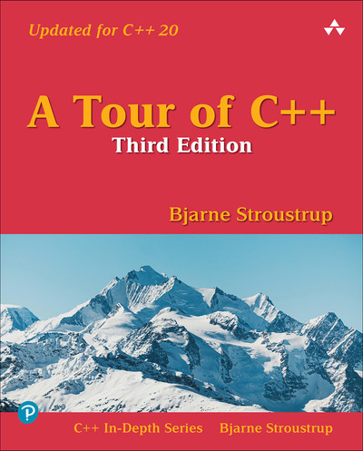

Supplemental References
If templates still feel new, these references can give you a second explanation from a different angle. They are optional, but they pair well with this module’s work on generic subset-sum code.

- A Tour of C++, Chapter 7: Templates — freely available to Foothill students via O’Reilly Media.
- Absolute C++, Chapter 16 Templates slides — accessible non-HTML PowerPoint slides.